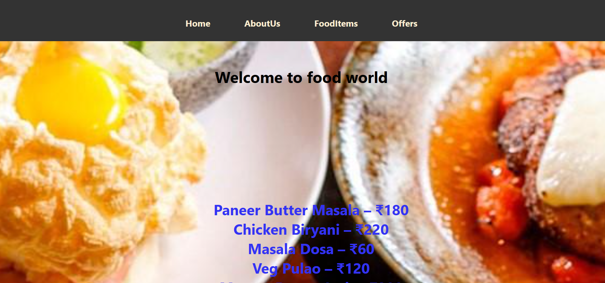
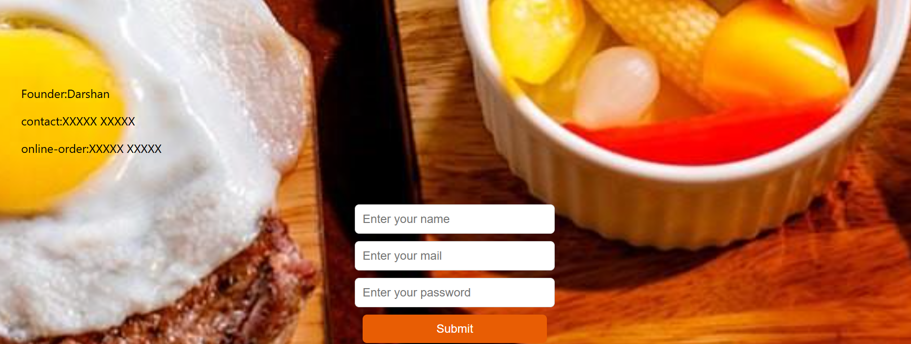

About Me
I'm Darshan, a passionate Computer Science student who enjoys building websites and exploring new
technologies.
I love solving problems through code, and I’m always eager to learn more about web development and software
design.
Currently, I'm focusing on improving my frontend skills using HTML, CSS, and JavaScript, and I’ve also
started learning Java and SQL.
I enjoy working on small projects, learning from online courses, and creating beautiful user interfaces.
Outside of coding, I love watching anime, and experimenting with design ideas to improve my creativity.
Projects
Food Ordering Website
A front-end responsive website built using HTML, CSS, and JavaScript. Focused on creating an attractive
and user-friendly interface for browsing and selecting food items. Currently, it is a design prototype
without back-end functionality.


Temperature Converter
A simple JavaScript-based tool that converts temperatures between Celsius and Fahrenheit. Designed with
a clean user interface using HTML and CSS.
Skills
Languages: Java, JavaScript, HTML, CSS, SQL
Tools & Technologies: Git, GitHub, VS Code
Web Development: Responsive design,basic form validation
Soft Skills: Problem-solving, teamwork, curiosity to learn, time management
Certificates
Design and Analysis of Algorithms – NPTEL
Completed an 8-week course conducted by IIT through NPTEL, covering topics like sorting, searching,
graph algorithms, and complexity analysis. Scored 50%.